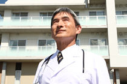

当病院について
院長メッセージ
 当院は、地域の皆様の健康・福祉の向上に努め、信頼され、安心してご利用いただける病院を目指しています。
現在医療を取り巻く環境は、機械中心の医療となっていますが、機械を通して患者さんと接することで、患者さんを置いてきぼりにしている医師が増えて来ているように思えます。
しかし、医療というものは患者さんと医師との信頼関係があってこそ、最適にできるものだと考えています。当院では、治療方法を患者さんと一緒に決めていく手法を取っています。患者さん自身に現状を理解してもらいながら、納得のいく治療方法を一緒に決めていくことで、信頼関係を構築でき、安心して治療に入っていただくことができると考えています。
また、現在は健康や福祉以外でもできることを模索し、地域連携や環境などの分野で様々な取り組みを積極的に行なっています。
これからも地域や患者の皆様から信頼され、安心してご利用いただける病院を創っていきたいと思っています。
最先端の医療を目指して
 当院では卓越した技術を習得した専門の医師が各診療科に所属し、常に最先端の医療をご提供できるように、日々研磨しています。
当院では卓越した技術を習得した専門の医師が各診療科に所属し、常に最先端の医療をご提供できるように、日々研磨しています。
また、大学病院や医療研究機関などと連携し、ワクチン開発や医療技術研究にも力を入れ、難病に苦しむ大勢の患者さんに希望を与えられるような病院を目指しています。